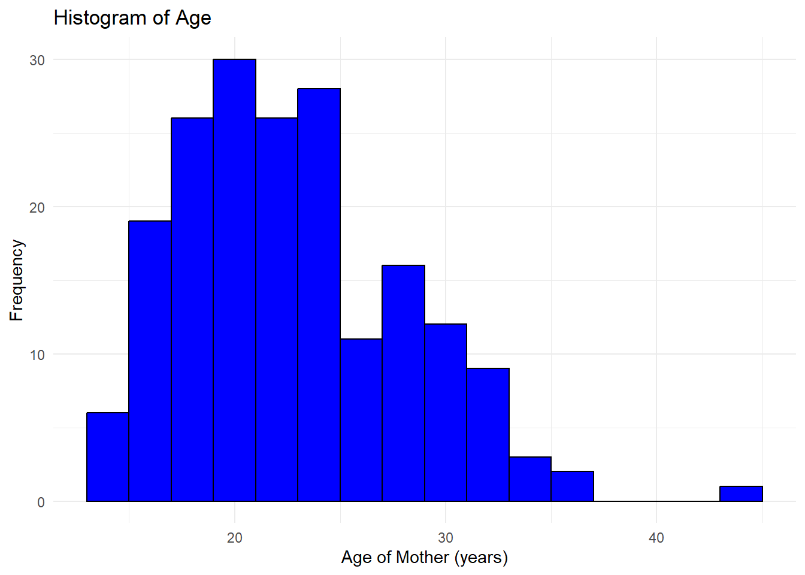

Medical Statistics – Answers lab 1
Part 1 - Descriptive statistics
ImportantQuestion 1
Based on the shape of the histogram, determine which summary statistics are more appropriate to report.
TipAnswer question 1
From the histogram, it follows that the distribution of age is right-skewed. In such a situation, we would generally prefer reporting median [IQR] or median [Q1, Q3] over mean (SD).
ImportantQuestion 2
Calculate the mean, standard deviation, median, and IQR for the variable lwt. Additionally, create a histogram to determine the shape of its distribution and decide which summary measures are most appropriate to report.
TipAnswer question 2
We start by making a histogram of the variable lwt:

From the histogram, it follows that the distribution of lwt is right-skewed. We therefore prefer reporting median [Q1, Q3]. The median [Q1, Q3] is equal to 121 [110, 140].
ImportantQuestion 3
Calculate the frequencies and percentages for the variable history of hypertension (ht)
TipAnswer question 3
| ht | frequency | percentage |
|---|---|---|
| 0 | 177 | 93.7% |
| 1 | 12 | 6.3% |
ImportantQuestion 4
Create a bar chart for the variable ht to visualize the frequency of mothers with a history of hypertension.
TipAnswer question 4
Part 2 - Probability calculations for random variables
ImportantQuestion 5
The probability of being blood group B is 0.08. What is the probability that if 500 ml of blood is taken from each of 100 unrelated blood donors fewer than 1,500 ml of group B blood will be obtained?
TipAnswer question 5
If we let the random variable X denote the number of blood donors of blood group B, it follows from the text in the exercise that X ~ Bin(0.08, 100). Fewer than 1,500 ml of group B blood will be obtained if X is equal to or smaller than 2. We can therefore answer this question by calculating \(P(X \leq 2)\) using the cumulative distribution function of the binomial distribution, which gives a probability of 0.01 or 1%.
ImportantQuestion 6
In a clinical trial in which a total of 100 patients are allocated to two treatments A and B by simple randomization (tossing a coin for each new patient). What is the probability that the difference between the numbers of patients in the two treatment groups exceeds 20? (Hint: the number of individuals in one treatment group (for example A) follows a Binomial distribution).
TipAnswer question 6
If we let the random variable X denote the number of individuals in treatment group A, we get a difference between the number of patients in the two treatment groups of over 20 if \(X < 40\) or if \(X > 60\). Using the cumulative distribution function of the binomial distribution, these probabilities are equal to \(P(X < 40) = 0.0176\) and \(P(X > 60) = 1 - P(X \leq 60) = 0.0176\). The probability that the difference between the number of patients in the two treatment groups exceeds 20 is therefore equal to 2*0.0176 = 0.035 or 3.5%
ImportantQuestion 7
Over a 25 year period the mean height of adult males increased from 175.8 cm to 179.1 cm, but the standard deviation stayed at 5.84 cm. The minimum height requirement for men to join the police force is 172 cm. What proportion of men would be too short to become policemen at the beginning and end of the 25 year period, assuming that the height of adult males has a Normal distribution?
TipAnswer question 7
At the start, the minimum height was \((172 - 175.8) / 5.84 = -0.65\) standard deviations from the mean. From the cumulative distribution function of the standard normal distribution, the proportion of men smaller than this would be about \(26\%\). At the end of the \(25\)-year period, the minimum height was \((172 - 179.1) / 5.84 = -1.22\) standard deviations from the mean. From the cumulative distribution function of the standard normal distribution, the proportion of men below the minimum is now about \(11\%\). Thus, the proportion of ineligible men has more than halved.
Part 3 - Some conceptual questions
ImportantQuestion 8
Imagine we have some observations on blood pressure and calculate the mean, standard deviation, median and IQR. How do these measures change if all observations are
- increased by 10
- decreased by their mean
- multiplied by 10
- divided by their standard deviation
TipAnswer question 8
- Standard deviation and IQR remain the same, mean and median increase by 10.
- Standard deviation and IQR remain the same, mean and median decrease by the mean (the mean becomes zero).
- All are multiplied by 10.
- All are divided by standard deviation; the standard deviation becomes one.
ImportantQuestion 9
Two fair dice are rolled, the results are X1 and X2.
- What is the probability Prob(X1=X2)?
- What is the expected value E(X1), and the standard deviation SD(X1)?
- Give the expected value and the variance of X1+X2 and of X1-X2.
TipAnswer question 9
Question (a)
Assume the dice have different colors, red (R) and blue (B). \(P(R = 1) = \frac{1}{6}\), \(P(R = 2) = \frac{1}{6}\), etc. The outcomes of Red and Blue are independent of each other. So for example: \(P(R = 1 \text{ and } B = 4) = P(R = 1) \times P(B = 4) = \frac{1}{6} \times \frac{1}{6} = \frac{1}{36}\).
This is true for all possible combinations of outcomes. There are only \(6\) possible outcomes with equal results: \(R = 1\) and \(B = 1\), \(R = 2\) and \(B = 2\), and so on. In total: \(\text{Prob} = 6 \cdot (\frac{1}{6} \cdot \frac{1}{6}) = 6 \times \frac{1}{36} = \frac{1}{6}\).
Question (b)
Using the formula on page 3.3 of the syllabus:
\(E(X_1) = \frac{1}{6} \cdot (1 + 2 + 3 + 4 + 5 + 6) = 3.5\)
\(\text{Var}(X_1) = \frac{1}{6} \cdot [(1 - 3.5)^2 + (2 - 3.5)^2 + \ldots] = 2.92\)
\(\text{SD} = \sqrt{2.92} = 1.71\)
Question (c) Using the calculation rules on page 3.5 of the syllabus:
\(E(X_1 + X_2) = E(X_1) + E(X_2) = 3.5 + 3.5 = 7\)
\(\text{Var}(X_1 + X_2) = 2.92 + 2.92 = 5.84\)
\(E(X_1 - X_2) = 0\)
\(\text{Var}(X_1 - X_2) = 2.92 + 2.92 = 5.84\)
ImportantQuestion 10
There are two hospitals in town. On average 45 deliveries take place each day in the larger hospital, and 15 in the smaller. The probability of a baby being a boy is about 0.52, and the probability of twins is about 0.012. On any day, which hospital is more likely
- to have a set of twins delivered
- to have more than 60 % of babies being boys?
TipAnswer question 10
The larger hospital, simply because there are more births. (This question is about an absolute number: a set of twins).
The day-to-day variation in the proportion of boys will be greater in the smaller hospital, so it is more likely to have more than 60% of babies being boys on any day. (This question is about a relative number: 60% of the babies).
To make the differences more clear: consider a very small hospital (only one delivery per day) and a very large hospital (1000 deliveries a day).
The probability that the delivery in the small hospital will concern twins equals 0.012. The same is true for each delivery in the larger hospital, but since we have 1000 deliveries, we expect 12 of them to concern twins.
In the small hospital, the probability that the child is a boy is 0.52. If a boy is born, then 100% of the babies that day are boys. This will happen in 52% of the days. For the larger hospital, we expect to see 520 boys and 480 girls on an arbitrary day. Some days there will be more than 520 boys, and other days there will be fewer. However, the probability that more than 60% of the children (more than 600 out of 1000) will be boys is very small—for sure less than 0.52.
ImportantQuestion 11
The probability of a baby being a boy is 0.52. For six women delivering consecutively in the same labour ward on one day, which of the following exact sequences of boys and girls is most likely and which least likely?
GBGBGB
BBBGGG
GBBBBB
TipAnswer question 11
As the probability of a boy is slightly greater than the probability of a girl, the sequence with the most boys is most likely, which is the last sequence. The other two sequences are equally likely.